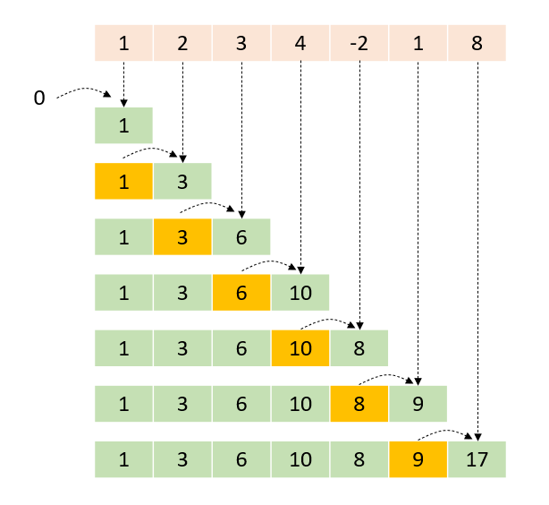

Taskflow provide template methods that construct tasks to perform parallel scan over a range of items.
You need to include the header file, taskflow/algorithm/scan.hpp, for creating a parallel-scan task.
A parallel scan task performs the cumulative sum, also known as prefix sum or scan, of the input range and writes the result to the output range. Each element of the output range contains the running total of all earlier elements using the given binary operator for summation.

tf::Taskflow::inclusive_scan(B first, E last, D d_first, BOP bop) generates an inclusive scan, meaning that the N-th element of the output range is the sum of the first N input elements, so the N-th input element is included. For example, the code below performs an inclusive scan over five elements:
The output range may be the same as the input range, in which the scan operation is in-place with results written to the input range. For example, the code below performs an in-place inclusive scan over five elements:
Similar to tf::Taskflow::inclusive_scan(B first, E last, D d_first, BOP bop), tf::Taskflow::inclusive_scan(B first, E last, D d_first, BOP bop, T init) performs an inclusive scan but with an additional initial value init. For example, the code below performs an inclusive scan over five elements plus an initial value:
You can transform elements in the input range before running inclusive scan using tf::Taskflow::transform_inclusive_scan(B first, E last, D d_first, BOP bop, UOP uop) and tf::Taskflow::transform_inclusive_scan(B first, E last, D d_first, BOP bop, UOP uop, T init). For example, the code below performs an inclusive scan over five transformed elements:
You can also associate the transform-inclusive scan with an initial value using tf::Taskflow::transform_inclusive_scan(B first, E last, D d_first, BOP bop, UOP uop, T init). Only elements in the input range will be transformed using uop, i.e., the initial value init does not participate in uop.
tf::Taskflow::exclusive_scan(B first, E last, D d_first, T init, BOP bop) generates an exclusive scan with the given initial value. The N-th element of the output range is the sum of the first N-1 input elements, so the N-th input element is included. For example, the code below performs an exclusive scan over five elements with an initial value -1:
The output range may be the same as the input range, in which the scan operation is in-place with results written to the input range. For example, the code below performs an in-place exclusive scan over five elements with an initial -1:
You can transform elements in the input range before running exclusive scan using tf::Taskflow::transform_exclusive_scan(B first, E last, D d_first, T init, BOP bop, UOP uop). For example, the code below performs an exclusive scan over five transformed elements: